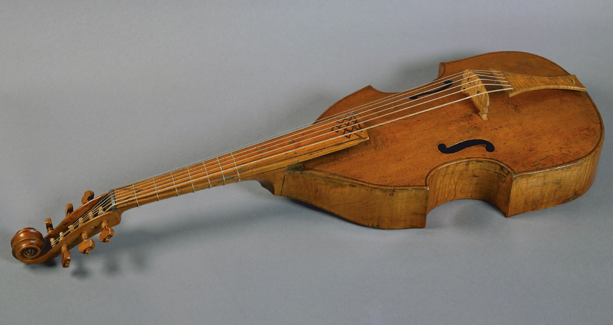

Instrumentos estrella por países
- España: Destacó la vihuela (un antepasado de la guitarra), con compositores famosos como Luys de Milán y Narváez.
- Inglaterra: Triunfaron los conjuntos de violas y el virginal (un instrumento de teclado).
El instrumento más popular
El laúd fue el instrumento de cuerda pulsada más extendido por toda Europa. Su compositor más importante fue el inglés John Dowland.
Evolución al Barroco
Al nacer la orquesta moderna en el Barroco, muchos instrumentos renacentistas desaparecieron. Otros evolucionaron para mejorar su sonido:
- El sacabuche se transformó en el trombón.
- La chirimía se transformó en el oboe.
 |
 |
 |